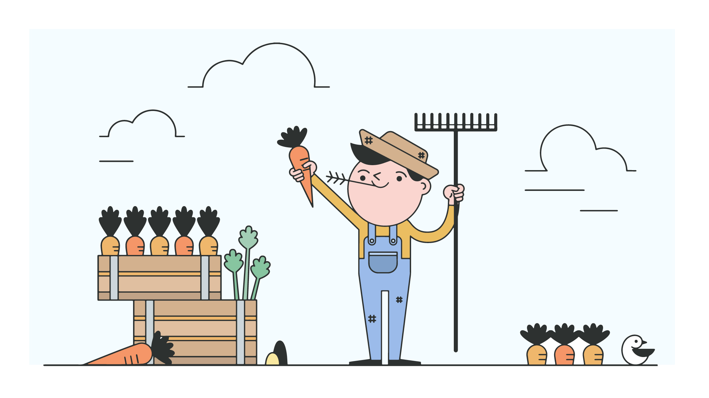
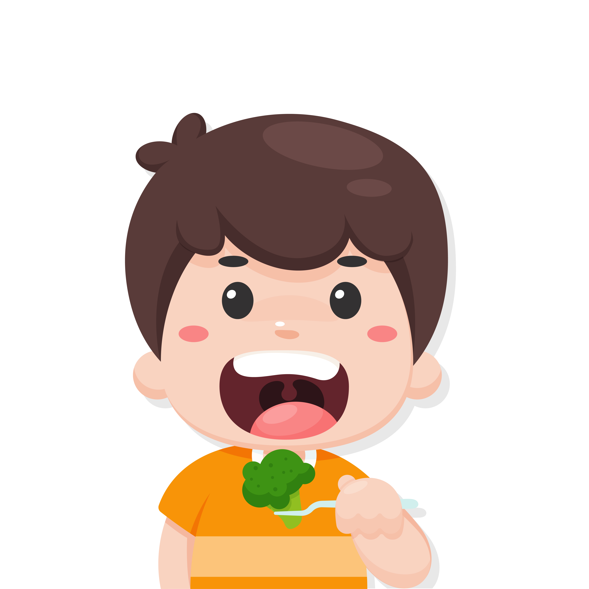

Przetwarzanie równoległe i strumieniowe
Wykład 3
Implementacja wątków w Pythonie, synchronizacja, wait/notify, semafory


Plan wykładu
Thread, start/run, join, demony, wyniki i wyjątki, threading.local
sekcja krytyczna, wyścig, Lock, RLock
producent-konsument, Condition, queue.Queue, Event
Semaphore, BoundedSemaphore, Barrier, który mechanizm wybrać
Przypomnienie z wykładu 1:
Wątki jednego procesu współdzielą pamięć: to wygodne (łatwa wymiana danych) i groźne (wyścigi).
W standardowym CPythonie GIL pozwala wykonywać kod Pythona tylko jednemu wątkowi naraz. Dziś zobaczymy, że GIL nie zwalnia nas z synchronizacji.
Klasa Thread
Wątek to obiekt klasy threading.Thread. Jego kod podajemy na dwa sposoby:
1. Funkcja przekazana jako target
import threading
import time
def pracuj(nr, opoznienie):
time.sleep(opoznienie)
print(f"wątek {nr} skończył po {opoznienie} s")
t1 = threading.Thread(target=pracuj, args=(1, 0.2))
t2 = threading.Thread(target=pracuj, args=(2, 0.1))
t1.start()
t2.start()
print("main: wątki uruchomione")
t1.join()
t2.join()
main: wątki uruchomione wątek 2 skończył po 0.1 s wątek 1 skończył po 0.2 s
2. Podklasa z nadpisaną metodą run()
import threading
import time
class Pobieracz(threading.Thread):
def __init__(self, url):
super().__init__(name=f"pobieracz-{url}") # obowiązkowo!
self.url = url
def run(self): # kod wykonywany w nowym wątku
time.sleep(0.1)
print(f"{self.name}: pobrano {self.url}")
watki = [Pobieracz(u) for u in ("a.pl", "b.pl")]
for w in watki:
w.start()
for w in watki:
w.join()
pobieracz-a.pl: pobrano a.pl pobieracz-b.pl: pobrano b.pl
W podklasie nadpisujemy tylko __init__() i run(). Pozostałych metod (start, join, …) nie ruszamy.
Konstruktor Thread i typowe błędy
| Argument | Znaczenie |
|---|---|
target | funkcja wywoływana przez run() |
args | krotka (lub lista) argumentów pozycyjnych, domyślnie () |
kwargs | słownik argumentów nazwanych |
name | nazwa do logów i debugowania, domyślnie "Thread-N (funkcja)" |
daemon | czy wątek jest demonem (o tym za chwilę) |
group | zarezerwowany, zawsze None |
Argumenty podajemy po nazwie: Thread(target=f, args=(1,)).
Które linie uruchomią f(5) w nowym wątku? (zaznacz wszystkie)def f(x): print(x)
target=f(5) wywołuje f od razu w wątku głównym, a wątek dostaje target=None i nic nie robi.
(5) to liczba, a nie krotka. W wątku pojawi się TypeError: f() argument after * must be an iterable, not int. Krotka jednoelementowa to (5,).
start() a run()
import threading
def kto():
print("działam w:", threading.current_thread().name)
threading.Thread(target=kto, name="Robotnik-1").run() # zwykłe wywołanie
t = threading.Thread(target=kto, name="Robotnik-2")
t.start() # nowy wątek
t.join()
t.start() # drugi raz?
działam w: MainThread działam w: Robotnik-2 Traceback (most recent call last): ... RuntimeError: threads can only be started once
start()tworzy nowy wątek systemowy i w nim wywołujerun(). Wolno go wywołać tylko raz.run()to zwykła metoda: wywołana bezpośrednio wykona się w bieżącym wątku, bez żadnej współbieżności.
join(): czekanie na wątek
t.join() blokuje wątek, który ją wywołał, aż wątek t się zakończy. Tak synchronizujemy zakończenie pracy: main zbiera wyniki dopiero wtedy, gdy wszystkie wątki skończą.
import threading
import time
def praca():
time.sleep(0.5)
print("praca: gotowe")
t = threading.Thread(target=praca)
t.start()
print("alive:", t.is_alive())
t.join(timeout=0.1) # czekaj najwyżej 0.1 s
print("po join(0.1), alive:", t.is_alive())
t.join() # czekaj do skutku
print("po join(), alive:", t.is_alive())
alive: True po join(0.1), alive: True praca: gotowe po join(), alive: False
join() zawsze zwraca None, także po przekroczeniu timeout. To, czy wątek naprawdę się skończył, sprawdzamy przez is_alive().
Najpierw uruchamiamy wszystkie wątki, potem na wszystkie czekamy. Pętla start(); join() dla każdego wątku z osobna wykonuje je po kolei.
Kiedy kończy się program?
t = threading.Thread(target=praca)
t.start()
print("main: koniec")
t = threading.Thread(target=praca)
t.start()
t.join()
print("main: koniec")
t = threading.Thread(target=praca, daemon=True)
t.start()
print("main: koniec")
praca() to funkcja z poprzedniego slajdu: sleep(0.5), a potem print("praca: gotowe").
Funkcje modułu threading
import threading
import time
def praca():
time.sleep(0.2)
for i in range(2):
threading.Thread(target=praca, name=f"W{i}").start()
print(threading.current_thread())
print(threading.main_thread() is threading.current_thread())
print(threading.active_count())
for t in threading.enumerate():
print(" ", t.name, t.daemon, t.native_id)
<_MainThread(MainThread, started 140160428555200)> True 3 MainThread False 367378 W0 False 367410 W1 False 367411
enumerate() zwraca wątki żywe: bez jeszcze nieuruchomionych i już zakończonych. native_id to identyfikator wątku w systemie operacyjnym (ten sam co w top -H).
Stare nazwy w stylu Javy są przestarzałe od Pythona 3.10 i zgłaszają DeprecationWarning:
| Przestarzałe | Używaj |
|---|---|
t.getName(), t.setName(n) | t.name |
t.isDaemon(), t.setDaemon(b) | t.daemon, Thread(daemon=True) |
threading.currentThread() | threading.current_thread() |
threading.activeCount() | threading.active_count() |
event.isSet() | event.is_set() |
cond.notifyAll() | cond.notify_all() |
W starszych materiałach i odpowiedziach ze Stack Overflow wciąż spotkacie setDaemon(True) czy currentThread(). Zamieniajcie je na nowe nazwy.
Wynik i wyjątek z wątku
Wartość zwrócona przez target przepada, a wyjątek w wątku nie trafia do wątku głównego.
import threading
def kwadrat(x, wyniki, i):
wyniki[i] = x * x # każdy wątek pisze w SWOJE miejsce
dane = [3, 1, 4, 1, 5]
wyniki = [None] * len(dane)
watki = [threading.Thread(target=kwadrat, args=(x, wyniki, i))
for i, x in enumerate(dane)]
for w in watki:
w.start()
for w in watki:
w.join()
print(wyniki)
[9, 1, 16, 1, 25]
Inne sposoby: queue.Queue (za chwilę) albo ThreadPoolExecutor, którego future.result() zwraca wynik (wykład 7).
import threading
def zle():
1 / 0
t = threading.Thread(target=zle, name="Zly")
t.start()
t.join()
print("main działa dalej")
Exception in thread Zly:
Traceback (most recent call last):
...
File "zly.py", line 4, in zle
1 / 0
~~^~~
ZeroDivisionError: division by zero
main działa dalej
Wyjątek kończy tylko ten wątek. Traceback wypisuje threading.excepthook, który można podmienić, np. na zapis do logu.
Dane lokalne wątku (threading.local)
Obiekt threading.local() wygląda jak jedna zmienna, ale każdy wątek widzi w nim własne atrybuty, np. własne połączenie z bazą.
Zmienna globalna: wątki sobie przeszkadzają
import threading
import time
licznik = 0 # jedna zmienna dla wszystkich
def zadanie(nazwa):
global licznik
licznik = 0
for _ in range(5):
time.sleep(0.01)
licznik += 1
print(nazwa, licznik)
watki = [threading.Thread(target=zadanie, args=(f"W{i}",))
for i in range(3)]
for w in watki: w.start()
for w in watki: w.join()
W0 13 W1 14 W2 15
threading.local: każdy ma swoją kopię
import threading
import time
dane = threading.local() # atrybuty osobne dla każdego wątku
def zadanie(nazwa):
dane.licznik = 0
for _ in range(5):
time.sleep(0.01)
dane.licznik += 1
print(nazwa, dane.licznik)
watki = [threading.Thread(target=zadanie, args=(f"W{i}",))
for i in range(3)]
for w in watki: w.start()
for w in watki: w.join()
W0 5 W1 5 W2 5
Kiedy wątki przyspieszają?
import threading
import time
def pobierz(url):
time.sleep(1) # udaje czekanie na sieć: wątek śpi, GIL zwolniony
urls = [f"https://example.com/{i}" for i in range(5)]
start = time.perf_counter()
for u in urls:
pobierz(u)
print(f"sekwencyjnie: {time.perf_counter() - start:.2f} s")
start = time.perf_counter()
watki = [threading.Thread(target=pobierz, args=(u,)) for u in urls]
for w in watki: w.start()
for w in watki: w.join()
print(f"5 wątków: {time.perf_counter() - start:.2f} s")
sekwencyjnie: 5.00 s 5 wątków: 1.01 s
time.sleep(s)wstrzymuje bieżący wątek nassekund i oddaje procesor innym wątkom.- I/O-bound (sieć, dysk, baza, czujniki): wątki większość czasu czekają, więc świetnie się nadają.
Kiedy wątki przełączają
- CPU-bound (same obliczenia, bez czekania): przez GIL tylko jeden wątek naraz wykonuje kod Pythona, więc wątki liczą na zmianę, a nie równolegle.
- Przy CPU-bound nikt nie czeka, więc nie ma czego nakładać. Interpreter co około 5 ms (
sys.getswitchinterval()) odbiera GIL jednemu wątkowi i daje go następnemu. Cztery wątki liczą po kawałku, na zmianę, na jednym rdzeniu. - Pracy jest tyle samo co sekwencyjnie, a dochodzi koszt przełączania i walki o GIL. Pomiar w CPythonie 3.13: 4 ×
sum(i * i for i in range(3_000_000))sekwencyjnie 2.19 s, w 4 wątkach 2.92 s, czyli wolniej.
Sprawdź się
Po t.join(timeout=1) wątek t nadal działa. Co zwróciło join?
join() zawsze zwraca None. Po join z limitem czasu trzeba sprawdzić t.is_alive().
Wątek-demon w pętli dopisuje pomiary do pliku. Co się stanie, gdy wątek główny dojdzie do końca programu?
Demony są zatrzymywane gwałtownie: nie wykonają się bloki finally, plik może zostać niedopisany. Do zadań, które muszą się porządnie zakończyć, używamy zwykłych wątków i sygnału końca (np. Event, który poznamy za chwilę).
Program w CPythonie 3.13 (z GIL) pobiera 200 plików z sieci. Co da największe przyspieszenie najmniejszym kosztem?
To zadanie I/O-bound: podczas czekania na sieć GIL jest zwalniany, więc wątki czekają równolegle. Procesy też zadziałają, ale są dużo droższe w tworzeniu i komunikacji.
Synchronizacja
Synchronizacja to koordynacja pracy wątków. Ma dwa cele:
- Wzajemne wykluczanie (mutual exclusion): kontrola dostępu do współdzielonego zasobu. Sekcja krytyczna to fragment kodu korzystający ze wspólnych danych, który w danej chwili może wykonywać co najwyżej jeden wątek.
- Koordynacja kolejności: wątek czeka, aż inny osiągnie znany punkt (skończy pracę, przygotuje dane). Przykłady:
join(),Condition,Event.
Współdzielenie danych bez poprawnej synchronizacji to najczęstsza przyczyna błędów w programach współbieżnych. Takie błędy pojawiają się losowo i trudno je odtworzyć.
Wyścig: sprawdź, potem działaj
Dwa wątki jednocześnie wypłacają 80 zł z konta, na którym jest 100 zł. Sprawdzenie i wypłata to dwa kroki, a wątek może zostać przełączony pomiędzy nimi.
import threading
import time
saldo = 100
def wyplac(kwota):
global saldo
if saldo >= kwota: # sprawdź...
time.sleep(0.01) # tu wątek zostaje przełączony
saldo -= kwota # ...i działaj
watki = [threading.Thread(target=wyplac, args=(80,))
for _ in range(2)]
for w in watki: w.start()
for w in watki: w.join()
print("saldo:", saldo)
saldo: -60
import threading
import time
saldo = 100
lock = threading.Lock()
def wyplac(kwota):
global saldo
with lock: # sekcja krytyczna
if saldo >= kwota:
time.sleep(0.01)
saldo -= kwota
watki = [threading.Thread(target=wyplac, args=(80,))
for _ in range(2)]
for w in watki: w.start()
for w in watki: w.join()
print("saldo:", saldo)
saldo: 20
sleep tylko powiększa okno, w którym wątek zostanie przełączony; bez niego błąd też wystąpi, tylko rzadziej. GIL nie pomaga: chroni wewnętrzne struktury interpretera, a nie nasze sekwencje operacji. Symulację wyścigu licznik += 1 widzieliśmy na wykładzie 1, a anomalie omówimy dokładnie na wykładzie 4.
Zamek (Lock)
Zamek (mutex) jest w jednym z dwóch stanów: odblokowany lub zablokowany. Nowy zamek jest odblokowany.
acquire()na odblokowanym zamku blokuje go i natychmiast wraca.acquire()na zablokowanym zamku czeka, aż inny wątek wywołarelease(). Jeśli czeka kilka wątków, zamek dostaje tylko jeden z nich (bez gwarancji kolejności).release()odblokowuje zamek. Wywołane na odblokowanym zamku zgłaszaRuntimeError.- Zwykły
Locknie ma właściciela: zwolnić go może dowolny wątek.
Lock to najniższy poziom synchronizacji w Pythonie, zaimplementowany bezpośrednio w module _thread. Pozostałe mechanizmy są z niego zbudowane.
Lock w praktyce: with i timeout
Zawsze używajmy with: zamek zostanie zwolniony nawet wtedy, gdy w sekcji krytycznej poleci wyjątek.
with lock:
saldo -= kwota
# to samo bez with:
lock.acquire()
try:
saldo -= kwota
finally:
lock.release()
Samo acquire() … release() bez try/finally: wyjątek w środku zostawi zamek zablokowany na zawsze i pozostałe wątki zawisną.
import threading
lock = threading.Lock()
print(lock.acquire()) # zamek wolny: bierzemy go
print(lock.locked())
print(lock.acquire(blocking=False)) # zajęty: nie czekamy
print(lock.acquire(timeout=0.5)) # zajęty: czekamy max 0.5 s
lock.release()
print(lock.locked())
lock.release() # zwolnienie wolnego zamka
True True False False False RuntimeError: release unlocked lock
acquire() zwraca True, gdy udało się zająć zamek. Wersje z blocking=False i timeout pozwalają zrobić coś innego, zamiast czekać w nieskończoność.
Lock i RLock: krok po kroku
Wątek A
Wątek B
Zamek wielokrotnego wejścia (RLock)
import threading
class Konto:
def __init__(self, saldo):
self.saldo = saldo
self.lock = threading.RLock() # z Lock() program się zawiesi
def wplac(self, kwota):
with self.lock:
self.saldo += kwota
def wyplac(self, kwota):
with self.lock:
if self.saldo < kwota:
raise ValueError("brak środków")
self.saldo -= kwota
def przelej(self, cel, kwota):
with self.lock: # 1. wejście
self.wyplac(kwota) # 2. wejście tego samego wątku
cel.wplac(kwota)
a, b = Konto(100), Konto(0)
a.przelej(b, 30)
print(a.saldo, b.saldo)
70 30
RLock (reentrant lock) pamięta właściciela i licznik rekursji. Ten sam wątek może go zająć wiele razy, ale musi wywołać release() tyle razy, ile acquire().
Lock | RLock | |
|---|---|---|
| właściciel | brak | wątek, który go zajął |
ponowne acquire() w tym samym wątku | czeka w nieskończoność (zakleszczenie) | licznik + 1 |
release() z innego wątku | dozwolone | RuntimeError |
| szybkość | szybszy | nieco wolniejszy |
RLock przydaje się, gdy metody chronione tym samym zamkiem wywołują się nawzajem. Domyślnie z niego korzysta Condition.
Sprawdź się
Wątek A wykonał lock.acquire() na zwykłym Lock. Teraz wątek B wywołuje lock.release(). Co się stanie?
Lock nie ma właściciela, więc zwolnić go może dowolny wątek. To bywa wygodne (sygnalizacja), ale zwykle oznacza błąd. RLock w tej sytuacji zgłosi RuntimeError: cannot release un-acquired lock.
Które fragmenty są poprawne, gdy wiele wątków wykonuje je jednocześnie? (zaznacz wszystkie)
licznik += 1 to odczyt, dodanie i zapis: wątek może zostać przełączony pomiędzy nimi. W trzecim przykładzie sprawdzenie jest poza zamkiem, więc dwa wątki mogą przejść przez if, zanim którykolwiek odejmie. queue.Queue ma synchronizację wbudowaną.
Producent-konsument

Producent → bufor → Konsument

Klasyczny wzorzec programowania współbieżnego:
- Producenci wytwarzają dane i wkładają je do wspólnego bufora.
- Konsumenci wyjmują dane z bufora i je przetwarzają.
- Obie strony pracują we własnym tempie: bufor wyrównuje chwilowe różnice prędkości.
Przykłady:
- kolejka wydruku: aplikacja „kończy drukowanie”, choć drukarka jest zajęta, a drukarka bierze zadania, gdy tylko się zwolni,
- serwer WWW: wątek przyjmujący połączenia → kolejka żądań → wątki robocze,
- czujniki → broker danych → aplikacje analizujące strumień.
Bufor: zasady działania
- Bufor musi być bezpieczny dla wątków: wstawianie i wyjmowanie to sekcje krytyczne.
- Bufor może być nieograniczony lub ograniczony. Ograniczony chroni pamięć: zbyt szybki producent musi poczekać (backpressure).
- Gdy bufor jest pusty, konsument czeka (nie zużywając procesora), aż pojawią się dane.
- Producent może dać znać, że danych już nie będzie. Wtedy konsumenci kończą pracę i system zostaje zamknięty.
Por. jenkov.com/tutorials/java-concurrency/producer-consumer.html
Producent-konsument: symulacja
Producent
gotowy
Konsument
gotowy
wyprodukowano: 0 | przetworzono: 0 | producent czekał: 0.0 s | konsument czekał: 0.0 s
Uruchom symulację. Potem zamień tempa: kto czeka, gdy szybszy jest konsument? Co daje większy bufor?
Sam Lock nie wystarczy
Konsument ma czekać, aż w buforze coś się pojawi. Z samym zamkiem zostaje tylko aktywne czekanie (busy waiting, polling):
def konsument():
while True: # aktywne czekanie
with lock:
if bufor:
x = bufor.pop(0)
break
time.sleep(0.01) # odpytuj co 10 ms
print("mam", x)
- Bez
sleepwątek zużywa 100% rdzenia (i walczy o GIL z producentem). - Z
sleepreaguje z opóźnieniem do 10 ms. Krótszy sen to więcej marnowanej pracy, dłuższy to większe opóźnienie.
Zamek chroni sekcję krytyczną, ale nie potrafi powiadomić innych wątków, że warunek został spełniony.
Potrzebujemy operacji: „uśpij mnie, aż ktoś zmieni stan” (wait) oraz „obudź czekających” (notify).
Zmienna warunkowa (Condition)
threading.Condition łączy zamek (domyślnie RLock) z listą wątków oczekujących na powiadomienie. Razem realizują wzorzec monitora.
| Metoda | Działanie (zamek musi być zajęty) |
|---|---|
with cond: | zajmuje i zwalnia zamek |
cond.wait(timeout=None) | atomowo zwalnia zamek i usypia wątek; po obudzeniu odzyskuje zamek i dopiero wtedy wraca |
cond.notify(n=1) | budzi co najwyżej n czekających wątków |
cond.notify_all() | budzi wszystkich czekających; potem i tak „walczą” o zamek |
cond.wait_for(pred) | czeka, aż pred() zwróci prawdę |
wait/notify: if czy while?
Konsument K1
Producent P
Konsument K2
Condition: bufor ograniczony
import threading
import time
from collections import deque
class Bufor:
def __init__(self, pojemnosc):
self.dane = deque()
self.pojemnosc = pojemnosc
self.cond = threading.Condition()
def put(self, x):
with self.cond:
while len(self.dane) == self.pojemnosc:
self.cond.wait() # pełny: czekaj
self.dane.append(x)
self.cond.notify_all() # obudź czekających
def get(self):
with self.cond:
while not self.dane:
self.cond.wait() # pusty: czekaj
x = self.dane.popleft()
self.cond.notify_all()
return x
- Warunek sprawdzamy w pętli
while(symulacja na poprzednim slajdzie). - Na tej samej zmiennej warunkowej czekają i producenci (bufor pełny), i konsumenci (bufor pusty). Zwykłe
notify()mogłoby obudzić „niewłaściwy” wątek, dlategonotify_all(). - Lepiej: dwie zmienne warunkowe na jednym zamku,
nie_pelnyinie_pusty. Wtedy wystarczynotify(). Tak działaqueue.Queue. dequezamiast listy:popleft()działa w O(1), alist.pop(0)w O(n).
Bufor w działaniu
def producent(b):
for i in range(5):
b.put(i)
print(f"P: włożyłem {i}")
b.put(None) # koniec danych
def konsument(b):
while (x := b.get()) is not None:
time.sleep(0.1) # wolny konsument
print(f" K: przetworzyłem {x}")
b = Bufor(pojemnosc=2)
watki = [threading.Thread(target=producent, args=(b,)),
threading.Thread(target=konsument, args=(b,))]
for w in watki: w.start()
for w in watki: w.join()
Ciąg dalszy kodu z poprzedniego slajdu. None pełni rolę wartownika (sentinel): umówionej wartości „koniec danych”.
P: włożyłem 0
P: włożyłem 1
P: włożyłem 2
K: przetworzyłem 0
P: włożyłem 3
K: przetworzyłem 1
P: włożyłem 4
K: przetworzyłem 2
K: przetworzyłem 3
K: przetworzyłem 4
Dlaczego producent zdążył włożyć 0, 1 i 2, choć pojemność to 2?
Konsument wyjął 0 i przez 0.1 s go przetwarzał, więc w buforze były tylko 1 i 2. Dopiero put(3) musiał czekać, aż konsument zwolni miejsce.
Condition: zasady
wait()inotify()wolno wywołać tylko z zajętym zamkiem, czyli wewnątrzwith cond:.notify()nie zwalnia zamka: obudzony wątek ruszy dopiero, gdy powiadamiający wyjdzie zwith.- Powiadomienie, na które nikt nie czeka, przepada. Dlatego czekamy na stan (np. „bufor niepusty”), a nie na samo powiadomienie.
wait_for(pred)to gotowa pętlawhile not pred(): wait().
import threading
cond = threading.Condition()
cond.notify() # bez zajęcia zamka
RuntimeError: cannot notify on un-acquired lock
import threading
cond = threading.Condition()
gotowe = False
with cond:
print(cond.wait(timeout=0.2)) # nikt nie powiadomił
print(cond.wait_for(lambda: gotowe, timeout=0.2)) # warunek nie spełniony
False False
wait() i wait_for() zwracają False, gdy minął timeout.
Ćwiczenie: skrzynka wiadomości
import threading cond = threading.Condition() skrzynka = [] def odbierz(): with : while : cond. return skrzynka.pop(0) def wyslij(msg): with cond: skrzynka.append(msg) cond.
Uzupełnij kod tak, aby odbierz() czekało na wiadomość, nie zużywając procesora.
while, a nie if: po obudzeniu warunek trzeba sprawdzić ponownie. notify() wystarczy, bo czekają tylko odbiorcy, a każda wiadomość jest dla jednego z nich. Gotowym rozwiązaniem tego zadania jest queue.Queue.
queue.Queue: gotowy bufor
import threading
import queue
import time
q = queue.Queue(maxsize=3) # bufor ograniczony, bezpieczny dla wątków
def producent():
for i in range(6):
q.put(i) # czeka, gdy kolejka pełna
q.shutdown() # Python 3.13+: koniec danych
def konsument(nazwa):
while True:
try:
x = q.get() # czeka, gdy kolejka pusta
except queue.ShutDown: # zamknięta i opróżniona
break
time.sleep(0.1)
print(nazwa, "przetworzył", x)
watki = [threading.Thread(target=producent)]
watki += [threading.Thread(target=konsument, args=(f"K{i}",)) for i in (1, 2)]
for w in watki: w.start()
for w in watki: w.join()
print("koniec")
K1 przetworzył 0 K2 przetworzył 1 K1 przetworzył 2 K2 przetworzył 3 K2 przetworzył 5 K1 przetworzył 4 koniec
- W środku: jeden zamek i zmienne warunkowe
not_empty,not_full, czyli naszBufor. put(x, timeout=1),get_nowait()zgłaszająqueue.Full/queue.Empty.shutdown()jest nowe w 3.13. Wcześniej: wartownikNone, po jednym dla każdego konsumenta.
Kolejność wyników zmienia się między uruchomieniami. Są też LifoQueue, PriorityQueue i SimpleQueue.
Kolejka zadań: task_done() i join()
import threading
import queue
q = queue.Queue()
def robotnik():
while True:
zadanie = q.get()
print("robię", zadanie)
q.task_done() # zgłoś wykonanie zadania
threading.Thread(target=robotnik, daemon=True).start()
for z in ("a", "b", "c"):
q.put(z)
q.join() # czekaj, aż wszystkie będą task_done()
print("wszystko zrobione")
robię a robię b robię c wszystko zrobione
q.join()czeka, aż każde zadanie zput()zostanie potwierdzone przeztask_done(), a nie tylko wyjęte z kolejki.- Tu demon jest uzasadniony: robotnik czeka w
get()w nieskończoność, a poq.join()wszystko jest już zrobione, więc nic nie tracimy. - Kilka takich robotników to pula wątków (thread pool). Gotową pulę daje
ThreadPoolExecutor(wykład 7).
Zdarzenie (Event)
import threading
import time
start = threading.Event() # flaga, na początku False
def biegacz(nr):
start.wait() # czekaj, aż flaga = True
print(f"biegacz {nr} wystartował")
watki = [threading.Thread(target=biegacz, args=(i,)) for i in range(3)]
for w in watki: w.start()
time.sleep(0.5)
print("START!", start.is_set())
start.set() # budzi WSZYSTKICH czekających
for w in watki: w.join()
START! False biegacz 1 wystartował biegacz 2 wystartował biegacz 0 wystartował
Kolejność biegaczy zmienia się między uruchomieniami.
Event to flaga logiczna z czekaniem: set(), clear(), is_set(), wait(timeout).
- W odróżnieniu od
notify()pamięta stan:wait()poset()wraca od razu. - Typowe użycie: flaga zatrzymania wątku roboczego,
while not stop.is_set(): ..., astop.wait(1)działa jaksleep(1), który można przerwać. - Nie chroni danych: to sygnał, a nie zamek.
Sprawdź się
Co robi cond.wait() z zamkiem zmiennej warunkowej?
Gdyby trzymał zamek, producent nigdy nie mógłby niczego włożyć do bufora i powiadomić konsumenta.
Producent wywołał notify(), zanim konsument zaczął czekać. Konsument potem wywołuje cond.wait() bez sprawdzania warunku. Co się stanie?
Powiadomienie bez czekających przepada (lost wake-up). Dlatego zawsze while not warunek: cond.wait(). Event pamiętałby stan.
Na Event czeka 5 wątków. Ilu obudzi event.set()?
set() ustawia flagę i budzi wszystkich. Kolejne wait() też nie będą czekać, aż ktoś wywoła clear().
Semafory
Lock wpuszcza do sekcji jeden wątek. A co, jeśli 10 użytkowników ma korzystać z bazy danych, która pozwala na tylko 4 jednoczesne sesje?
Semafor (Dijkstra, 1965) to licznik dostępnych „przepustek”:
Semaphore(n): stan początkowy licznika ton,acquire(): jeśli licznik > 0, zmniejsza go o 1; jeśli licznik = 0, czeka, aż ktoś wywołarelease(),release(): zwiększa licznik o 1 i budzi jeden czekający wątek,- licznik nigdy nie spada poniżej zera.
Dijkstra nazwał te operacje P (proberen, spróbuj) i V (verhogen, zwiększ). W Javie to acquire/release, w POSIX sem_wait/sem_post.
Semaphore(1) działa jak zamek, ale nie ma właściciela: release() może wywołać dowolny wątek. Dlatego semafor nadaje się też do sygnalizacji między wątkami.
Semafor ogranicza liczbę wątków w sekcji, ale nie chroni danych przed wyścigiem: przy n > 1 wspólne dane w środku nadal wymagają zamka.
Semafor: symulacja
Jeszcze nie przyszli
Czekają w acquire()
W sekcji (sesja z bazą)
Licznik semafora
4Zakończyli (release())
czas: 0.0 s | maks. jednocześnie w sekcji: 0 | łączny czas czekania: 0.0 s
10 użytkowników (U0…U9) przychodzi co 0.1 s, każde zapytanie trwa 0.4–1.0 s. Porównaj Semaphore(1), który działa jak zamek, z Semaphore(5).
Semafor w Pythonie
import threading
import time
import random
polaczenia = threading.Semaphore(4) # 4 sesje bazy danych
licznik_lock = threading.Lock()
aktywne = maks = 0
def uzytkownik(nr):
global aktywne, maks
with polaczenia: # acquire() ... release()
with licznik_lock:
aktywne += 1
maks = max(maks, aktywne)
time.sleep(random.uniform(0.1, 0.3)) # zapytanie do bazy
with licznik_lock:
aktywne -= 1
watki = [threading.Thread(target=uzytkownik, args=(i,)) for i in range(10)]
start = time.perf_counter()
for w in watki: w.start()
for w in watki: w.join()
print("maks. jednocześnie:", maks)
print(f"czas: {time.perf_counter() - start:.2f} s")
maks. jednocześnie: 4 czas: 0.57 s
Czas zależy od wylosowanych opóźnień. Licznik aktywne to wspólne dane, więc chroni go osobny zamek (zob. ostatnia uwaga z poprzedniego slajdu).
BoundedSemaphore: wykrywa nadmiarowe release()
import threading
s = threading.Semaphore(2)
s.release() # błąd: brak acquire()
print([s.acquire(blocking=False) for _ in range(4)])
b = threading.BoundedSemaphore(2)
b.release()
[True, True, True, False] ValueError: Semaphore released too many times
Zwykły semafor po cichu „dorobił” trzecią przepustkę. Przy ograniczaniu dostępu do zasobu używajmy BoundedSemaphore.
Bariera (Barrier)
import threading
import random
import time
bariera = threading.Barrier(3) # czeka na 3 wątki
def etapy(nr):
time.sleep(random.random())
print(f"W{nr}: etap 1 gotowy")
bariera.wait() # dalej dopiero, gdy dojdą wszyscy
print(f"W{nr}: etap 2")
watki = [threading.Thread(target=etapy, args=(i,)) for i in range(3)]
for w in watki: w.start()
for w in watki: w.join()
W0: etap 1 gotowy W2: etap 1 gotowy W1: etap 1 gotowy W1: etap 2 W2: etap 2 W0: etap 2
Barrier(n): każdy wątek wywołujewait()i czeka, aż zrobi tonwątków. Wtedy ruszają wszystkie naraz (kolejność wypisów jest losowa, ale żaden „etap 2” nie pojawi się przed ostatnim „etapem 1”).- Bariera jest wielokrotnego użytku: po przepuszczeniu grupy wraca do stanu początkowego.
- Zastosowanie: algorytmy etapowe (np. iteracje obliczeń na siatce), gdzie etap k+1 potrzebuje wyników wszystkich wątków z etapu k. Wrócimy do nich na wykładzie 6 (algorytmy równoległe).
Który mechanizm wybrać?
| Problem | Mechanizm |
|---|---|
| chronić wspólne dane przed jednoczesną modyfikacją | Lock + with |
| metody chronione tym samym zamkiem wywołują się nawzajem | RLock |
| czekać, aż wspólny stan spełni warunek (np. „bufor niepusty”) | Condition: wait / notify |
| przekazywać dane między wątkami (producent-konsument) | queue.Queue |
| jednorazowy sygnał lub flaga zatrzymania | Event |
| ograniczyć liczbę wątków korzystających naraz z zasobu | BoundedSemaphore(n) |
| poczekać, aż wszystkie wątki skończą etap | Barrier(n) |
| poczekać na zakończenie wątku | join() |
Zasada praktyczna: najpierw queue.Queue i brak współdzielonego stanu (jak czyste funkcje z wykładu 2). Ręczne zamki i zmienne warunkowe dopiero wtedy, gdy kolejka nie wystarcza.
Sprawdź się
Który mechanizm wybrać?
Pobieranie plików z serwera, który pozwala na maksymalnie 3 równoczesne połączenia.
Semafor z licznikiem 3 wpuści do sekcji najwyżej 3 wątki naraz.
Wątki robocze mają ruszyć dopiero wtedy, gdy wątek główny wczyta konfigurację.
Jednorazowy sygnał dla wielu wątków: config_gotowy.wait() w robotnikach, config_gotowy.set() w main.
Wątki odczytujące czujniki przekazują pomiary do jednego wątku, który zapisuje je do bazy.
Klasyczny producent-konsument: kolejka przekazuje dane i synchronizuje obie strony.
Podsumowanie wykładu
Thread(target=f, args=(...,))+start()tworzy wątek,join()na niego czeka. Program czeka na wszystkie wątki poza demonami.- Wspólne dane modyfikujemy tylko w sekcji krytycznej:
with lock:. GIL tego nie zastępuje. RLockmoże zająć wielokrotnie ten sam wątek.Lockzajęty drugi raz przez ten sam wątek to zakleszczenie.Condition:wait()zwalnia zamek i usypia,notify()budzi. Warunek zawsze sprawdzamy w pętliwhile.- Producent-konsument najprościej zrealizować przez
queue.Queue(od 3.13 zshutdown()). Semaphore(n)wpuszczanwątków naraz,Eventto sygnał,Barrierto punkt spotkania.
Laboratorium 3: Thread, Lock i RLock, Condition, semafory i Event w praktyce. Kod uruchamiamy w PyCharm: zawieszony wątek w Jupyterze wymaga restartu kernela.
Następny wykład (28.10, zdalnie): anomalie przetwarzania równoległego: zagłodzenie, race condition, zakleszczenie.